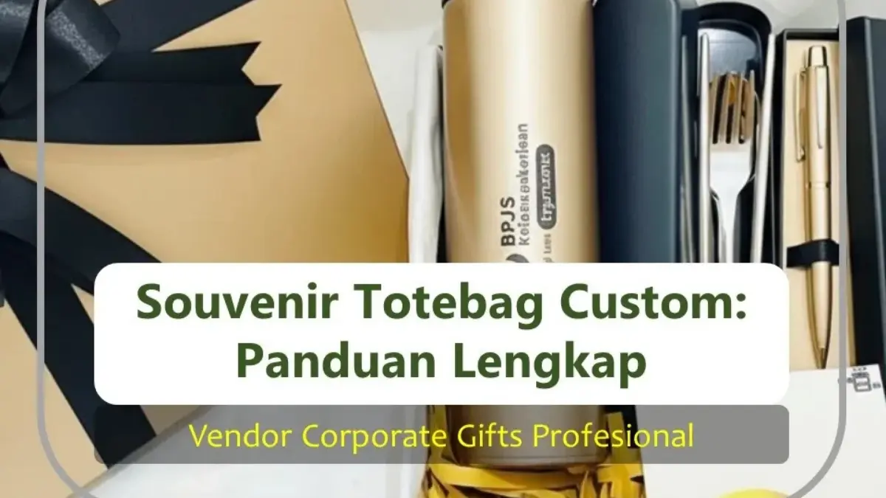

Corporate Gifts ID - Dalam beberapa tahun terakhir, souvenir totebag custom telah menjadi salah satu pilihan merchandise paling populer untuk berbagai kegiatan instansi, mulai dari seminar ilmiah, pameran bisnis, pelatihan karyawan, hingga program CSR perusahaan. Totebag kain yang dicetak dengan logo korporat berfungsi efektif sebagai media branding berjalan karena terus digunakan oleh penerima di ruang publik tanpa membebani biaya iklan tambahan.
Dibandingkan dengan kemasan plastik atau merchandise sekali pakai, totebag memiliki ketahanan fisik yang lama dan nilai kepraktisan tinggi. Setiap kali tas tersebut dibawa berbelanja, kuliah, atau bekerja, logo institusi Anda mendapatkan impresi visual baru secara organik.
Poin Kunci Souvenir Totebag Custom:
- Efisiensi ROI Branding: Memberikan rasio biaya terhadap impresi brand tertinggi berkat penggunaan berulang kali di ranah publik.
- Fleksibilitas Bahan: Pilihan kanvas premium, blacu eco, spunbond non-woven ekonomis, hingga polyester sublimasi full print.
- Multi-Skenario Korporat: Sangat ideal untuk paket seminar kit, onboarding kit staf baru, goodie bag expo, dan hampers akhir tahun.
- Desain Minimalis Modern: Penempatan logo proporsional dengan palet warna elegan terbukti meningkatkan kebanggaan pemakai.
Apa Itu Totebag Custom dan Kenapa Efektif untuk Branding Perusahaan?
Totebag custom adalah tas jinjing berbentuk persegi terbuka atau berpenutup resleting berbahan kain yang dicetak dengan identitas visual korporat. Tas ini memfasilitasi mobilitas pengguna untuk membawa dokumen kantor, laptop ringan, buku catatan, maupun perlengkapan harian.
Kekuatan branding dari sebuah souvenir custom terletak pada kegunaannya di luar area kantor. Ketika penerima membawanya ke pusat perbelanjaan, kafe, transportasi umum, atau pusat kebugaran, logo korporat Anda tampil di hadapan ratusan orang yang berbeda setiap harinya.
Perbedaan Totebag Custom vs Goodie Bag Sekali Pakai
Banyak panitia pengadaan sering bingung membedakan antara kantong goodie bag biasa dan totebag custom. Berikut perbedaannya:
- Goodie Bag Konvensional: Menggunakan bahan kertas tipis (paper bag) atau plastik sekali pakai. Seringkali langsung dibuang setelah peserta tiba di rumah.
- Totebag Custom Kain: Memiliki gramasi kain tebal dengan jahitan tali webbing yang kokoh. Bertahan bertahun-tahun dan dicuci berulang kali tanpa merusak struktur tas.
- Nilai Citra Lingkungan: Menggunakan totebag kain mencerminkan komitmen perusahaan terhadap gerakan eco-friendly dan pengurangan sampah plastik.
Pilihan Bahan Totebag Custom Perusahaan & Tabel Karakteristik
Terdapat tiga jenis material utama yang paling banyak digunakan dalam industri konveksi totebag korporat:
1. Totebag Bahan Kanvas & Blacu
Bahan kanvas memiliki serat kain yang tebal, rapat, dan kuat, memberikan nuansa klasik serta mewah. Kanvas sangat cocok untuk cinderamata eksekutif, merchandise berbayar, atau gift set VIP. Sementara itu, kain blacu menawarkan tekstur natural kapas yang ramah lingkungan dengan harga lebih terjangkau.
2. Totebag Bahan Spunbond (Non-Woven)
Spunbond diproduksi dari serat sintetis polypropylene higienis. Bobotnya sangat ringan, tersedia dalam aneka pilihan warna cerah, dan biaya produksinya sangat hemat sehingga menjadi pilihan utama untuk acara berskala ribuan peserta.
3. Totebag Full Print Sublimasi
Memanfaatkan kain polyester seperti kanvas cordura atau drill yang dicetak full-color all-over. Solusi tepat jika desain perusahaan memiliki ilustrasi rumit atau gradasi warna warni yang membutuhkan ketajaman resolusi tinggi.
| Jenis Bahan | Karakteristik & Tekstur | Rekomendasi Penggunaan |
|---|---|---|
| Kanvas Premium | Tebal, kuat, tahan beban berat, kesan mewah | Gift eksekutif, merchandise resmi, event formal VIP |
| Kain Blacu | Warna putih gading natural, ramah lingkungan, fleksibel | Event CSR, kampanye lingkungan, workshop kreatif |
| Non-Woven (Spunbond) | Sangat ringan, ekonomis, higienis, aneka warna | Seminar massal, pameran expo, gathering ribuan peserta |
| Polyester Full Print | Cetak menutupi seluruh permukaan, warna tajam awet | Peluncuran produk, branding promosi visual penuh |

Kombinasi isi souvenir totebag perusahaan: tumbler botol emas berlogo korporat, set alat makan stainless steel, dan pulpen metal eksekutif.
Kebutuhan Korporat yang Menggunakan Totebag Custom
Totebag custom dapat diintegrasikan ke dalam berbagai agenda operasional dan promosi perusahaan:
- Wadah Utama Paket Seminar Kit: Menyimpan buku catatan, pulpen seminar, tumbler minum, dan modul materi acara secara rapi dan praktis.
- Onboarding Welcome Kit: Menyambut staf baru dengan bingkisan perlengkapan kerja kantor di hari pertama kerja untuk menumbuhkan rasa bangga.
- Bingkisan Klien B2B & Mitra Strategis: Memberikan kemasan mewah pelengkap hampers perusahaan pada momen perayaan akhir tahun atau hari raya.
- Pameran Dagang (Exhibition) & Peluncuran Produk: Memastikan para calon pelanggan membawa pulang brosur dan cinderamata produk Anda dengan nyaman.
Faktor Penentu Harga & Estimasi Biaya Produksi Totebag
Biaya pengadaan totebag custom dipengaruhi oleh kuantitas pesanan, pilihan bahan, teknik cetak (sablon manual, DTF, atau bordir), serta aksesoris tambahan seperti resleting, perekat velcro, dan furing dalam.
| Jenis Bahan Totebag | Estimasi Rentang Harga per Pcs | Minimal Pemesanan Umum |
|---|---|---|
| Non-Woven (Spunbond 75-100 gsm) | Mulai Rp5.000 - Rp9.000 | 100 - 500 pcs |
| Kain Blacu Natural | Mulai Rp10.000 - Rp16.000 | 50 - 100 pcs |
| Kanvas Twill / Baby Canvas | Mulai Rp18.000 - Rp35.000 | 50 pcs |
| Full Print Sublimasi / Cordura | Mulai Rp30.000 - Rp55.000 | 50 pcs |
Tren Desain Totebag Custom 2026: Minimalis & Elegan
Pada era modern 2026, tren desain totebag bergeser dari cetakan iklan yang terlalu ramai ke arah estetika minimalis (clean typography & subtle logo). Pengguna modern cenderung enggan memakai tas yang tampak seperti pamflet promosi berjalan.
Sebaliknya, penempatan logo monokrom berukuran proporsional di sudut tas, dipadukan dengan kutipan inspiratif atau ilustrasi arsitektur kantor, akan membuat totebag tersebut disukai dan selalu dipakai bepergian.
Tertarik memproduksi totebag custom berkualitas untuk agenda perusahaan Anda? Hubungi konsultan kami di CorporateGifts.ID untuk mendapatkan sampel bahan fisik, visual 3D mockup gratis, dan penawaran harga vendor terbaik.